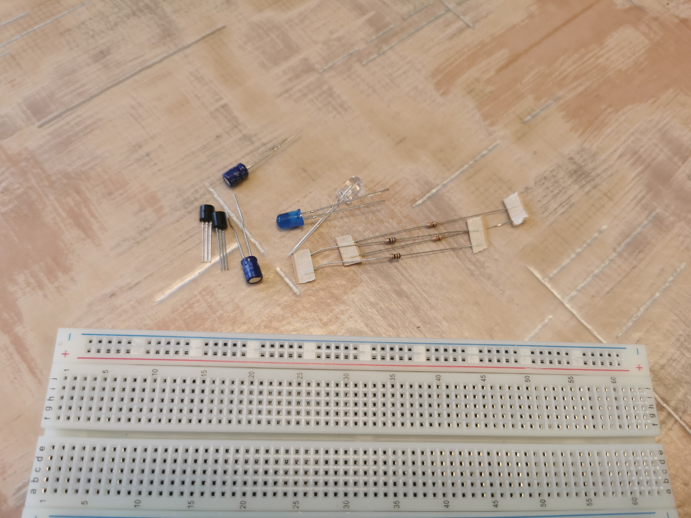

Ezután megkaptuk a breadboard-ot és szükséges alkatrészeket, amik:
2 tranzisztor
2 kondenzátor
4 ellenállás
2 LED

A tervezett frekvencia tartomány és periódusidő könnyen beállítható volt a megfelelő ellenállások és kondenzátorok kiválasztásával, ami lehetővé tette az áramkör alkalmazását különböző célokra